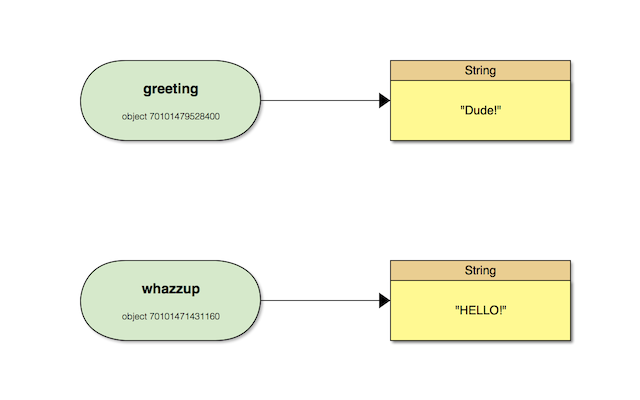

Specific Topics of Interest
Be able to explain clearly the following topics:
- local variable scope, especially how local variables interact with method invocations with blocks and method definitions
- how passing an object into a method definition can or cannot permanently change the object
- working with collections (Array, Hash, String), and popular collection methods (each, map, select, etc). Review the two lessons on these topics thoroughly.
- variables as pointers
- puts vs return
- false vs nil and the idea of “truthiness”
- method definition and method invocation
- implicit return value of method invocations and blocks
How to Answer the Assessment Questions
The questions in this assessment will typically be testing your knowledge and understanding on more than one level.
- On one level the question is testing your ability to parse code and to describe it with precision, or testing your knowledge of some specific syntactical aspect or language-specific feature of the Ruby programming language.
- On another level, the question is checking your understanding of some deeper, underlying principle; this might be some more fundamental aspect of the Ruby language, or a non-language-specific concept that applies to programming more generally.
When answering the questions, you should:
- Explain your reasoning with reference to specific lines in the program. You can use line numbers to refer to specific lines of code where necessary.
- Answer with extreme precision. For example, say “method definition” or “method invocation” as opposed to just “method” (see the section on ‘Precision of Language’ below for more on this).
- Highlight any specific syntactical conventions or technical observations where relevant.
- Identify the key fundamental concept or concepts being demonstrated in the question.
Example
Examine the code example below. The last line outputs the String ‘Hi’ rather than the String ‘Hello’. Explain what is happening here and identify the underlying principle that this demonstrates.
greeting = 'Hello'
loop do
greeting = 'Hi'
break
end
puts greetingMy answer before looking at suggested answer:
Within this code, on the first line, the string ‘Hello’ is assigned to the variable ‘greeting’. Next, a loop block is run, inside the block, the string ‘Hi’ is assigned to the variable ‘greeting’. Next, the loop is broken with ‘break’. Finally the method ‘puts’ is called on the variable ‘greeting’ which which now contains the string ‘Hi’, which is output to the screen. The variable ‘greeting’ contains the string ‘Hi’ because is was assigned this value within the loop. If a variable is defined outside a block it may be accessed from within a block, and it’s vaule modified.
LS answers and explanations
Compare the following possible answers to this question:
A) greeting is set to ‘Hello’ on line 1. greeting is set to ‘Hi’ on line 4. Line 8 outputs greeting, which is ‘Hi’.
B) The local variable greeting is assigned to the String ‘Hello’ on line 1. Within the loop, greeting is then reassigned to the String Hi on line 4. The puts method is called on line 8 with the variable greeting passed to it as an argument; since greeting is now assigned to ‘Hi’, this is what is output.
C) The local variable greeting is assigned to the String ‘Hello’ on line 1. The do..end alongside the loop method invocation on lines 3 to 6 defines a block, within which greeting is reassigned to the String Hi on line 4. The puts method is called on line 8 with the variable greeting passed to it as an argument; since greeting is now assigned to ‘Hi’, this is what is output.
D) The local variable greeting is assigned to the String ‘Hello’ on line 1. The do..end alongside the loop method invocation on lines 3 to 6 defines a block, within which greeting is reassigned to the String Hi on line 4. The puts method is called on line 8 with the variable greeting passed to it as an argument; since greeting is now assigned to ‘Hi’, this is what is output. This example demonstrates local variable scoping rules in Ruby; specifically the fact that a local variable initialized outside of a block is accessible inside the block.
While none of these answers is technically incorrect, they all answer the question with varying degrees of detail and precision.
Answer ‘A’ describes what is happening in the code example, but does so in a fairly basic way with imprecise language. This wouldn’t be a sufficient response to receive full points for any of the questions in the assessment.
Answer ‘B’ again describes what is happening, but with much greater precision of language. This would score higher than Answer ‘A’, but generally wouldn’t be sufficient to receive full points for the majority of questions; most questions in the assessment are looking for something more, such as a specific piece of syntactical knowledge and perhaps identification of some fundamental concept.
Answer ‘C’, as well as precisely describing the example, identifies an important Ruby syntactical convention that is relevant to the example: the fact that the method invocation combined with do..end defines a block in Ruby. For some assessment questions this might be sufficient to receive full points, but many questions will expect you to demonstrate some deeper understanding of the fundamental concept that this illustrates.
Answer ’D’ goes a step further than ‘C’ by explaining why this is important and the underlying principle that it demonstrates; i.e. the fact that method invocations with blocks in Ruby have particular scoping rules which affect whether or not the local variable can be referenced or reassigned. Based on the way that this particular question is phrased, answer ’D’ would be the only answer of the four to receive full points in an actual assessment.
Example Question from Discussion Post, and My Answer
Describe the following code:
def fix(value)
value << 'xyz'
value = value.upcase
value.concat('!')
end
s = 'hello'
t = fix(s)A method ‘fix’, is defined on the first line, with a parameter of ‘value’. The variable ’s’ is assigned a value of ‘hello’ on line 6, then the method ‘fix’ is then called with ’s’ passed to the method and assigned to the variable ‘value’, with the return value of the method assigned to the variable ’t’. Within the method ‘fix’, on line 2, the string ‘xyz’ is appended to the variable ‘value’, this mutates the object referenced by the variable ‘value’, which the variable ’s’ also references, therefore both the variable ‘value’ within the method, and the variable ’s’ outside the method now contain the string ‘helloxyz’. Next, on line 3, the variable ‘value’ is assigned a new value of it’s previous value in upercase as a result of calling the method upcase on the variable ‘value’. ‘value’ now contains a new string object ‘HELLOXYZ’, this does not mutate ’s’, which is left unchaged. Finally on line 4, the string ‘!’ is appened to the string object referenced by the variable ‘value’, this is done by calling the concat method on ‘value’ with the string ‘!’ passed to the method. This mutates the variable ‘value’ to ‘HELLOXYZ!’, which is the final expression in the method ‘fix’, and is therefore implicitly return by the ‘fix’ method and assigned to the variable ’t’. The final value for the variables is: ’s’ = ‘helloxyz’, ’t’ = ‘HELLOXYZ!’
This method demonstarates how some operations inside a method can mutate the caller, but do not always do so. This method also demonstrates how a medthod with implicitly return the last expression of hte method.
Precision of Language
Most of the questions will require that you explain the code using words. It’s important to be able to explain why something happens using precise vocabulary and be able to pinpoint the exact causal mechanism at work. In other words, be precise and don’t be vague.
For example, let’s take the following piece of code.
def a_method
puts "hello world"
endIf asked to describe the method, you might be tempted to say “the results of the method is hello world”. This isn’t wrong, but for a programmer, it’s extremely imprecise and doesn’t help us understand the method. If you had written that as an answer, you’d score a 5⁄10 on the question (50% is not a passing score).
The more precise answer would be “the method outputs the string hello world, and returns nil”. In programming, we are always concerned with the output and the return value and mutations to objects. We need to speak in those terms, and not use vague words like “results”.
When writing answers to the test questions, make sure to be as precise as possible, and use the proper vocabulary. Doing this will help you debug and understand more complex code later in your journey. If your definitions are not precise, you will not be able to lean on them to decompose complicated code. Also, you will likely not be able to pass this assessment.
Some Specific Definitions
As well as requiring a general precision of language in your answers, for the purposes of the assessment there are a few areas where we would like you to refer to certain things in a very clear and fairly specific way; these are outlined below.
Truthiness
In the assessment we want you to be very clear about the distinction between truthy and the boolean true (and similarly the distinction between falsey and the boolean false).
In Ruby, every value apart from false and nil, evaluates to true in a boolean context. We can therefore say that in Ruby, every value apart from false and nil is truthy; we can also say that false and nil are falsey. This is not the same as saying every value apart from false and nil is true, or is equal to true. These may seem like subtle distinctions but they are important ones.
Example:
a = "Hello"
if a
puts "Hello is truthy"
else
puts "Hello is falsey"
endaistrueand so ‘Hello is truthy’ is output” would be incorrectais equal totrueand so ‘Hello is truthy’ is output” would be incorrectaevaluates totruein the condtional statement and so ‘Hello is truthy’ is output” would be correctais truthy and so ‘Hello is truthy’ is output” would be correct
To sum up:
*Use “evaluates to true” or “is truthy” when discussing an expression that evaluates to true in a boolean context *Do not use “is true” or “is equal to true” unless specifically discussing the boolean true
Method Definition and Method Invocation
When discussing methods, particularly in terms of how blocks and methods interact with local variables, we want you to explain this in terms of method definition and method invocation. You can review this assignment for an outline of the mental model to use.
Integer, Fixnum and Bignum
As of Ruby 2.4.0, Ruby has unified Fixnum and Bignum into Integer; Fixnum and Bignum are now deprecated. For the purposes of the assessment we want you to refer to Integer when identifying a Ruby object that represents a whole number. This assignment provides some additional context.
Variable References and Object Mutability Articles
1. Variable References and Mutability of Ruby Objects
Notes
Variable Assignment
An object is a bit of data that has some sort of state — sometimes called a value — and associated behavior. It can be simple, like the Boolean object true, or it can be complex, like an object that represents a database connection.
Objects can be assigned to variables, like this
>> greeting = 'Hello'
=> "Hello"This tells Ruby to associate the name greeting with the String object whose value is “Hello”. In Ruby, greeting is said to reference the String object. We can also talk of the variable as being bound to the String object, or binding variable to the String object. Internally, the relationship looks like this:
After assiging a greeting to a new variable whazzup the relationship looks like this:

Variable Reassignment
If next we assign a new value to greeting with the = operator, the realtionship now looks like so:

Here, we see that greeting and whazzup no longer refer to the same object; they have different values and different object ids. Crazy, right? Internally, we now have:
What this shows is that reassignment to a variable doesn’t change the object referenced by that variable.
Mutability
Objects can be either mutable or immutable. Mutable objects can be changed; immutable objects cannot be changed.
Immutable Objects
In Ruby, numbers and boolean values are immutable. Once we create an immutable object, we cannot change it.
>> a = 5.2
=> 5.2
>> b = 7.3
=> 7.3
>> a
=> 5.2
>> b
=> 7.3
>> a.object_id
=> 46837436124653162
>> b.object_id
=> 65752554559609242
>> a = b
=> 7.3
>> a
=> 7.3
>> b
=> 7.3
>> a.object_id
=> 65752554559609242
>> b.object_id
=> 65752554559609242
>> b += 1.1
=> 8.4
>> a
=> 7.3
>> b
=> 8.4
>> a.object_id
=> 65752554559609242
>> b.object_id
=> 32425917317067566Internally, the reasssignment looks like this:
Immutable objects aren’t limited to numbers and booleans. Objects of some complex classes, such as nil (the only member of the NilClass class) and Range objects (e.g., 1..10) are immutable. Any class can establish itself as immutable by simply not providing any methods that alter its state.
Mutable Objects
Unlike numbers, booleans, and a few other types, most objects in Ruby are mutable; they are objects of a class that permit modification of the object’s state in some way. Whether modification is permitted by setter methods or by calling methods that perform more complex operations is unimportant; so long as you can modify an object, it is mutable.
Consider Ruby Array objects; you can easily modify elements using indexed assignment:
>> a = %w(a b c)
=> ["a", "b", "c"]
>> a.object_id
=> 70227178642840
>> a[1] = '-'
=> "-"
>> a
=> ["a", "-", "c"]
>> a.object_id
=> 70227178642840This demonstrates that we can modify the value of a, but it doesn’t create a new object since the object id remains the same. We can see why this is by looking at how a is stored in memory:
A Brief Introduction to Object Passing
When you pass an object as an argument to a method, the method can — in theory — either modify the object, or leave it unmodified. It’s easy enough to see that any method can avoid modifying its arguments. However, whether or not the method can modify an argument is less clear; the ability to modify arguments depends in part on the mutability or immutability of the object represented by the argument, but also on how the argument is passed to the method.
Some languages make copies of method arguments, and pass those copies to the method — since they are merely copies, the original objects can’t be modified. Objects passed to methods in this way are said to be passed by value, and the language is said to be using a pass by value object passing strategy.
Other languages pass references to the method instead — a reference can be used to modify the original object, provided that object is mutable. Objects passed to methods in this way are said to be passed by reference, and the language is said to be using a pass by reference object passing strategy.
Many languages employ both object passing strategies. One strategy is used by default; the other is used when a special syntax, keyword, or declaration is used. Some languages may even employ different defaults depending on the object type — for example, numbers may be passed using a pass by value strategy, while strings may be passed using a pass by reference strategy.
Regardless of which strategy a language employs for a given argument and method, it’s important to know which one is used so you can understand what happens if the method modifies one of its arguments.
Developing A Mental Model
When learning new concepts, it often helps to develop a mental model of the concept, and then refine that model as additional information comes to light.
Pass by value, as you’ll recall, means copying the original objects, so the original object cannot be modified. Since immutable objects cannot be changed, they act like Ruby passes them around by value. This isn’t a completely accurate interpretation of how Ruby passes immutable objects, but it helps us determine why the following code works like it does:
def increment(a)
a = a + 1
end
b = 3
puts increment(b) # prints 4
puts b # prints 3Mutable objects, on the other hand, can always be modified simply by calling one of their mutating methods. They act like Ruby passes them around by reference; it isn’t necessary for a method to modify an object that is passed by reference, only that it can modify the object. As you’ll recall, pass by reference means that only a reference to an object is passed around; the variables used inside a method are bound to the original objects. This means that the method is free to modify those objects. Once again, this isn’t completely accurate, but it is helpful. For instance:
def append(s)
s << '*'
end
t = 'abc'
puts append(t) # prints abc*
puts t # prints abc*Conclusion
In this article, we’ve seen that Ruby variables are merely references to objects in memory; that is, a variable is merely a name for some object. Multiple variables can refererence the same object, so modifying an object using a given variable name will be reflected in every other variable that is bound to that object. We’ve also learned that assignment to a variable merely changes the binding; the object the variable originally referenced is not modified. Instead, a different object is bound to the variable.
We’ve also learned that certain object types, primarily numbers and Booleans but also some other types, are immutable in Ruby — unchanging; many other objects are mutable — changeable. If you attempt to change an immutable object, you won’t succeed — at best, you can create a new object, and bind a variable to that object with assignment. Mutable objects, however, can be modified without creating new objects.
Finally, we’ve learned a bit about what pass by value and pass by reference mean. We’ve established a mental model that says that Ruby is pass by value for immutable objects, pass by reference otherwise. This model isn’t perfect, but it can be used to help determine whether the object associated bound to an argument will be modified.
2. Mutating and Non-Mutating Methods in Ruby
Notes
This article concentrates on mutating and non-mutating methods in Ruby with respect to certain arguments.
Mutating and Non-Mutating Methods
Methods can either be mutating or non-mutating. The object that may, or may not be mutated is of concern when discussing wether a method is mutating or not.
Non-Mutating Methods
A method is said to be non-mutating with respect to both an argument and it’s receiver if it does not modify that argument.
All methods are non-mutating with respect o immutable objects. A method can’t modify numbers, or boolean values as they are immutable.
Assignment is Non-Mutating
Of particular importance is assignment with =. = is not a method, but should be treated as a non-mutating method. The = merely tells Ruby to bind an object to a variable.
compare the two following snippets of code:
def fix(value)
value.upcase! # Mutates object passed to method
value.concat('!') # Also mutates object passed to method
value # returns mutated object
end
s = 'hello'
t = fix(s)VS
def fix(value)
value = value.upcase # new assignment
value.concat('!') # Mutates new object, which is then implicitly returned
end
s = 'hello'
t = fix(s)We can see that the first snippet of code not only mutates s, but also returns a value at the end of the method. The second snippet does not mutate the caller. It’s important to note that even though .concat is used, which is mutating, it is not used on the original object passed to the method as a new object is created on the second line with the =, and then that object is mutated and returned. *=, +=, and %= also create new assignments.
The = does not always cause a variable to reference a new object. Look at the following example:
>> def fix(value)
-- value = value.upcase!
-- value.concat('!')
-- end
=> :fix
>> s = 'hello'
=> "hello"
>> s.object_id
=> 70363946430440
>> t = fix(s)
=> "HELLO!"
>> s
=> "HELLO!"
>> t
=> "HELLO!"
>> s.object_id
=> 70363946430440
>> t.object_id
=> 70363946430440Here, when value = value.upcase! is executed, it actually references the original, MODIFIED object. This is because .upcase! mutates the original string, and then = assigns that object back to value.
Mutating Methods
A method is said to be mutating with respect to an argument or receiver if it modifies the argument or receiver.
Many, but not all, methods that mutate their receiver use ! as the last character of their name. However, this is not guaranteed to be the case. For instance, String#concat is a mutating method, but it does not include a !.
There are several common methods that sometimes cause confusion, #[]=, #<<, and setter methods.
Index Assignment is Mutating
str[3] = 'x'
array[5] = Person.new
hash[:age] = 25This looks exactly like assignment, which is non-mutating, but is, in fact, mutating. #[] modifies the original object (the String, Array, or Hash). It doesn’t change the binding of each variable.
The reason for this is that indexed assignment is a method that a class must supply if it needs indexed assignment. This method is named #[]=, and #[]= is expected to mutate the object to which it applies. It does not create a new object.
An array example (explanation in comments):
>> a = [3, 5, 8]
=> [3, 5, 8]
>> a.object_id
=> 70240541515340 # array object ID
>> a[1].object_id
=> 11 # Object ID for element at index 1
>> a[1] = 9
=> 9
>> a[1].object_id
=> 19 # new object ID for the element at index position 1
>> a
=> [3, 9, 8]
>> a.object_id
=> 70240541515340 # Same object ID for the arrayThis is normal behaviour when working with objects that support indexed assignment: the assignment does cause a new reference to be made, but it is the collection element e.g., (a[1]) that is bound to the new object, not the collection (enclosing object) itself.
Concatenation is Mutating
The #<< method used by collections such as Array and Hash, along with the String class is mutating. It looks very similar to +=, but while the former is mutating, the latter is not.
The << operator is actually a method that is defined for some classes. It is usually used as a shorthand for appending new values to a collection or String. Such classes define << to mutate their left-hand operand (the receiver object).
Setters are Mutating
Setters are very similar to indexed assignment; they are methods that are defined to modify the state of an object. Both employ the something = value syntax, so they superficially look like assignments. With indexed assignment, the elements of a collection (or the characters of a String) are replaced; with setters, the state of the object is modified, usually by modifying an instance variable.
Setter invocation looks like this:
person.name = 'Bill'
person.age = 23This looks exactly like assignment, which is non-mutating, but, since these are setter calls, they actually mutate the object bound to person.
We won’t go into a lot of detail to illustrate this; suffice to say that a detailed discussion would be nearly identical to the discussion of indexed assignment.
Refining the Mental Model
What does this have to do with whether Ruby is pass by value or pass by reference? The mere fact that Ruby can have methods that mutate its arguments would seem to say that Ruby must use pass by reference in some circumstances. Arguments that are passed by copy cannot be mutated, so Ruby must use pass by reference when a method can mutate its arguments.
More importantly, the question of whether Ruby is pass by value or pass by reference usually concerns whether a method will mutate its arguments or receiver. With this discussion, we’re better equipped to determine whether a method will to mutate its arguments or receiver.
The presence of a ! at the end of a method name is a pretty good indicator that a method mutates its receiver. However, not all mutating methods use the ! convention. In such cases, you need to look at the source code of the method to see what operations are performed. Certain operations, like setters and indexed assignments should always be treated as mutating methods; others, like assignment and the assignment operators (+=, *=, etc) are always non-mutating.
While none of this modifies our mental model for object passing, it is all consistent with that mental model. Immutable objects still seem to be passed by value, while mutable objects seemed to be passed by reference. What we have done, though, is show that assignment can break the binding between an argument name and the object it references. This is important to keep in mind when examining the relationships between variables and objects.
Conclusion
In this article, we’ve seen that methods in Ruby can be mutating or non-mutating with respect to individual arguments, to include the receiver object. A method that does not modify its arguments or receiver is non-mutating with respect to those objects; a method that does modify its arguments or receiver is mutating with respect to the modified objects.
We’ve also learned that assignment in Ruby acts like a non-mutating method — it doesn’t modify any objects, but does alter the binding for the target variable. However, the syntactically similar indexed assignment and object setter operations are mutating. We’ve also seen that the #<< operator — when used for concatenation operations — is mutating, while the very similar operation performed by += is non-mutating.
3. Object Passing in Ruby - Pass by Reference or Pass by Value
Notes
Spend some time reviewing these articles to ensure that you have a good understanding of these topics.
Assessment Prep Videos
We did a Beginning Ruby series that will serve as great review for this test. Specifically, the sessions that are relevant to this assessment are:
Notes To Organise
When you say “the method local variable value is mutated ..”, I’d change that to “Inside, the method fix, the string object pointed to by the local variable value is mutated …`. The point is that we don’t mutate variables, but the objects those variables point to.